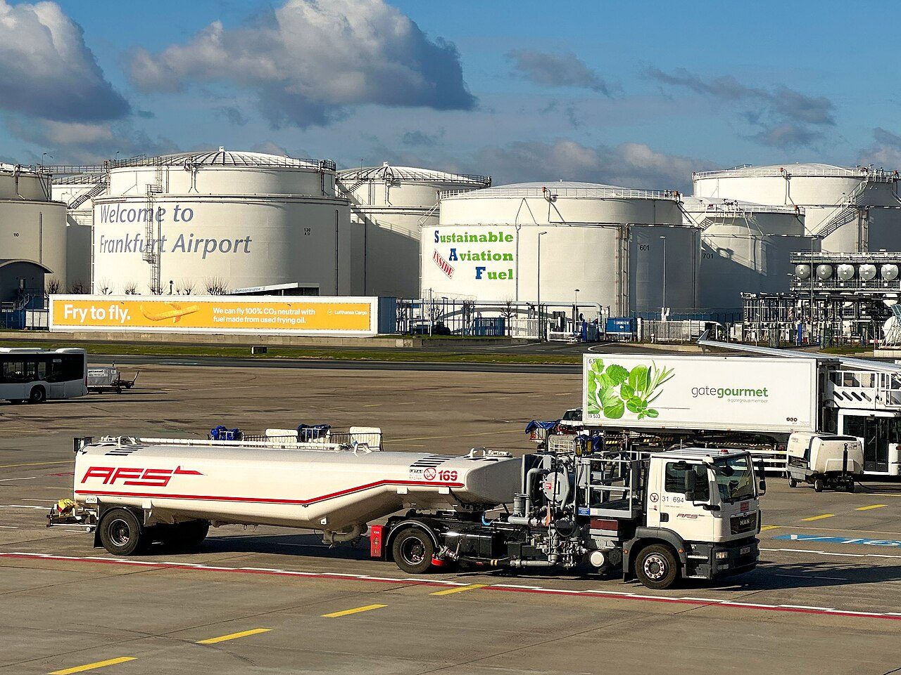
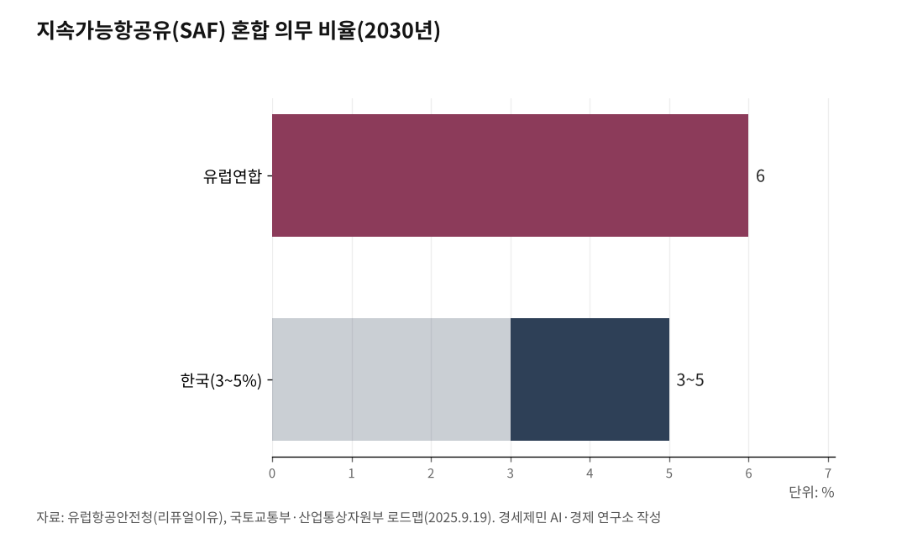

[세계3위 인천공항미래⑫] SAF 2년 늦은 인천, 환적 118만톤이 샌다
유럽보다 2년 늦은 지속가능항공유, 히스로는 세계 SAF의 17%를 빨아들인다
급유 거점을 선점해 환적을 지키고, 규제를 항공사 유치 카드로 바꾼다
AI경세제민=김갑봉 기자 | 미래 공항은 탄소와 디지털이라는 두 시험을 함께 치른다. 문제는 이 시험이 규제 준수로 끝나지 않는다는 데 있다. 규제를 비용으로만 보면 끌려가고, 허브 경쟁력으로 바꾸면 앞선다. 인천은 전력에선 아시아에서 가장 먼저 뛰었지만, 항공 연료에선 뒤늦게 출발했다. 앞선 것은 지키고 뒤진 것은 따라잡아야 한다.

전력은 앞섰지만 SAF는 뒤졌다
인천은 2022년 2월 아시아 공항 가운데 처음으로 재생에너지 100% 전환 캠페인(RE100)에 들었다. 영국 히스로와 개트윅에 이어 세계 세 번째다. 2030년 전력의 60%, 2040년 100%를 재생에너지로 돌린다는 목표도 세웠다. 전력에선 아시아에서 가장 먼저 뛰었다.
그러나 지속가능항공유(SAF)에선 뒤졌다. 유럽은 리퓨얼이유(ReFuelEU) 규정으로 2025년부터 유럽연합(EU) 공항 연료의 2%를 SAF로 의무화하고, 2030년 6%, 2035년 20%, 2050년 70%로 올린다. 싱가포르도 2026년 1%로 시작한다. 한국은 2027년에야 1%를 시작해 2030년 3~5%, 2035년 7~10%로 간다. 유럽보다 2년 늦고 비율도 낮다.
정리하면 인천은 전력에서 앞서고 연료에서 뒤졌다. 전력에서 벌어 둔 시간을 SAF에서 까먹지 않으려면, 뒤진 자리를 서둘러 메워야 한다.

SAF는 비용이 아니라 환적 방어선이다
SAF 의무에는 함정이자 기회가 숨어 있다. 급유는 '출발 공항'에서 이뤄진다. 인천의 최대 자산은 갈아타는 환적화물이다. 앞 편에서 짚었듯 국제화물의 약 40%인 118만톤이 인천에서 갈아탄다. 이 화물은 인천에서 급유하고 다시 뜬다.
그래서 SAF를 싸고 안정적으로 대는 공항이 환적을 붙든다. 히스로가 그 증거다. 히스로는 2024년 세계 SAF 공급의 17%를 혼자 썼다. SAF가 풍부한 공항으로 항공기가 모인다. 인천이 SAF 급유 거점을 선점하면 환적화물이 인천을 고르고, 놓치면 SAF가 싼 공항으로 빠진다. SAF는 비용이 아니라 인천의 환적 허브를 지키는 방어선이다.
히스로의 1400억원이 말하는 것
규제 부담은 항공사에 무겁다. 국제항공운송협회(IATA)는 2026년 6월 유럽에서 SAF 값이 일반 항공유의 3배, 항공사가 치르는 값은 4배에 이른다고 밝혔다. 세계 SAF 생산량은 전체 항공유의 1%에도 못 미친다. 값은 비싸고 물량은 얇다. 운임으로 다투는 저비용항공사(LCC)와 화물사가 특히 힘겹다.
선진 공항은 이 부담을 덜어 항공사를 붙든다. 히스로는 2026년 SAF 사용을 영국 의무 비율보다 2%포인트 높은 5.6%로 끌어올리며, 항공사에 약 8000만파운드(약 1400억원)를 지원한다. 싱가포르 창이는 SAF 부담금을 노선과 좌석 등급에 따라 차등하고, 갈아타는 환승객에게는 물리지 않는다. 환적 경쟁력을 지키려는 설계다. 부담을 어떻게 나누느냐가 곧 항공사 유치 경쟁이다.
인천의 카드는 운수권이다. 정부는 의무 비율을 넘겨 급유한 국적 항공사에 국제선 운수권 배분 가점을 1점에서 3.5점으로 늘린다. 여기에 공항이 급유 인프라와 보조를 얹으면, 통합 진에어와 에어인천의 부담을 덜어 인천에 붙드는 유인이 된다. 규제 대응이 곧 항공사 유치 전략이다.
디지털은 효율이 아니라 자본을 아낀다
탄소가 연료의 문제라면 디지털은 시설의 문제다. 인천은 2023년 7월 국내 처음으로 얼굴인식 출국 스마트패스를 열고, 2025년 9월 제1·2여객터미널 158개 탑승구 전체로 넓혔다. 안면정보를 미리 등록하면 여권과 탑승권 없이 얼굴만으로 출국장과 탑승구를 지난다.
디지털의 값어치는 효율에 그치지 않는다. 앞서 짚은 빈 3할, 가동률 70%를 물리적 확장 없이 채운다. 같은 시설에서 더 많은 여객을 처리하면 5단계 6조원 확장 시점을 늦출 수 있다. 소프트 증설이 하드 증설을 미루는 자본 전략이다. 디지털은 탄소도 줄이고 돈도 아낀다.
먼저 깐 공항이 앞선다
탄소와 디지털은 공사가 자체 권한으로 지금 밀어붙일 일이다. 첫째, SAF 급유·저장·혼합 인프라에 먼저 투자해 환적을 지키는 급유 거점을 선점한다. 둘째, 운수권 가점에 급유 보조를 더해 항공사 부담을 나눈다. 셋째, 재생에너지 자립을 앞당겨 전력에서 앞선 자리를 지킨다. 넷째, 스마트 운영으로 가동률을 끌어올려 확장 투자를 아낀다.
세계 600곳 넘는 공항이 국제공항협의회(ACI) 탄소관리 인증을 받았고, 그 가운데 18개가 넷제로 최고 등급에 올랐다. 암스테르담 스키폴이 그 최고 등급에 세계에서 처음으로 오른 공항 가운데 하나다. 규제는 모두에게 온다. 먼저 깐 공항이 그 규제를 허브 경쟁력으로 바꾼다.
탄소와 디지털은 먼 미래가 아니라 지금 깔 토대다. 규제를 준수 비용으로만 보면 끌려가고, 허브 경쟁력으로 바꾸면 앞선다. 전력에서 앞선 인천이 SAF와 디지털에서도 앞서야 하는 까닭이다.
다음 글에서 늘린 물동량을 부가가치로 바꾸는 비항공수익과 공항수출을 짚는다.
이 글은 인천공항의 미래를 다루는 연재의 열두 번째 글이다.
참고문헌
국토교통부·산업통상자원부, "지속가능항공유(SAF) 혼합의무화제도 로드맵"(2027년 1%, 2030년 3~5%, 2035년 7~10%, 의무 초과 급유 시 국제선 운수권 배분 가점 1점→3.5점), 2025.09.19., https://www.ajunews.com/view/20250919153733265
유럽항공안전청(EASA), "핏포55와 리퓨얼이유(ReFuelEU) 항공"(EU 공항 SAF 의무 2025년 2%·2030년 6%·2035년 20%·2050년 70%, 합성연료 하위의무 2035년 5%·2050년 35%), https://www.easa.europa.eu/en/light/topics/fit-55-and-refueleu-aviation (원문 직접 확인).
싱가포르 민간항공청(CAAS), "SAF 부담금 도입"(2026년 10월 출발편부터, 노선·좌석 등급별 차등, 환승객 제외, 2026년 1%→2030년 3~5%, 2050년 넷제로), 2025.11.10., https://www.caas.gov.sg/who-we-are/newsroom/Detail/new-SAF-levy-to-apply-from-1-apr-2026-for-flights-departing-from-1-oct-2026 (원문 직접 확인).
히스로공항, "2026년 SAF 인센티브"(영국 의무 3.6%보다 2%포인트 높은 5.6%·항공사 지원 8000만파운드 이상, 2024년 세계 SAF 공급의 17% 사용, 2030년 11%, 2050년 넷제로), Future Travel Experience 2026.2.14., https://www.futuretravelexperience.com/2026/02/heathrow-steps-up-carbon-cutting-programme-with-boosted-2026-sustainable-aviation-fuel-incentive/ (원문 직접 확인).
국제공항협의회 유럽(ACI EUROPE), "COP29, 세계 600개 공항 탄소관리 인증"(공항 탄소인증 600곳 이상, 넷제로 최고등급 Level 5 18개, 2050년 넷제로), 2024.11.20., https://www.aci-europe.org/press-release/517-cop29-sees-600-airports-now-certified-for-carbon-management-globally.html (원문 직접 확인).
국제공항협의회(ACI), "공항 탄소인증 Level 5 출범"(암스테르담 스키폴 등 세계 첫 달성 공항 10곳, 자체배출 Scope 1·2 90% 이상 감축·2050년 Scope 3 넷제로 요건), COP28 2023.12., Airport World 2023.12.6. (원문 직접 확인).
인천국제공항공사, "아시아 공항 최초 RE100 가입"(히드로·게트윅 이어 세계 세 번째, 2030년 전력 60%·2040년 100%), 경향신문 2022.02.27., https://www.khan.co.kr/article/202202271049001
인천국제공항공사, "스마트패스"(2023.7 국내 최초 얼굴인식 출국, 2025.9 제1·2여객터미널 158개 탑승구 전체 확대), https://www.airport.kr/ap_ko/889/subview.do
국제항공운송협회(IATA), "SAF 컨퍼런스"(유럽 SAF 값 일반 항공유 3배·항공사 지급 4배, 세계 공급량 전체 항공유의 1% 미만), 아주경제 2026.06.30., https://www.ajunews.com/view/20260630144052940
사진 출처
· [대표사진] Ubahnverleih, "Sustainable Aviation Fuel advertisment at frankfurt airport.jpg", 위키미디어 공용, CC0, https://commons.wikimedia.org/wiki/File:Sustainable_Aviation_Fuel_advertisment_at_frankfurt_airport.jpg
※ 이 기사는 인공지능을 활용해 작성했습니다. 사실관계는 저자가 확인했습니다.
관련기사
- [세계3위 인천공항미래⑪] 항공자유화가 화물을 늘린다, 실증된 지렛대다
- [세계3위 인천공항미래⑬] 면세 한 곳에 매달린 인천공항, 수익원을 넓혀야 산다
- [세계3위 인천공항미래⑩] 사람을 부르는 열쇠, 비자면제다
- [세계3위 인천공항미래⑭] 흑자 절반은 국고로, 부채비율 96%… 배당을 5단계에 묶어야 한다
저작권자 © AI경세제민 무단전재 및 재배포, AI학습 및 활용 금지